08-Network_A
Silvestro Di Pietro
Silvestro Di Pietro


Silvestro Di Pietro
27/04/2023
We consider a network as a graph of connected entities created to allow exchange informations through nodes
Cast is the packet data stream. 1. Unicast will send
data to an unique address, recipient 2. Broadcast send data
to all recipients of a network 3. Multicast send data to a
group of recipients
Network Topology refers to the physical and logical arrangement of devices on a network. There are several different types of Network Topologies, including Bus, Star, Ring, Mesh, and Tree.
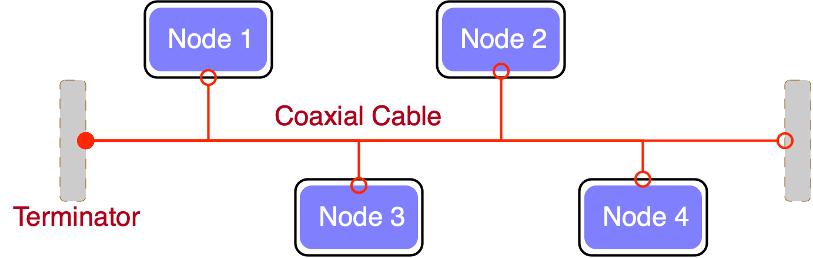
This type of topology is easy to set up and manage, but it can be vulnerable to failure if the backbone cable or bus is damaged
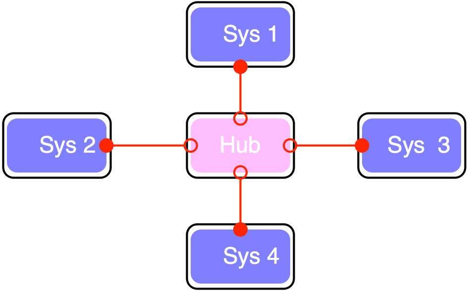
This type of topology is more robust than the Bus topology, but it can be more expensive to set up and manage.
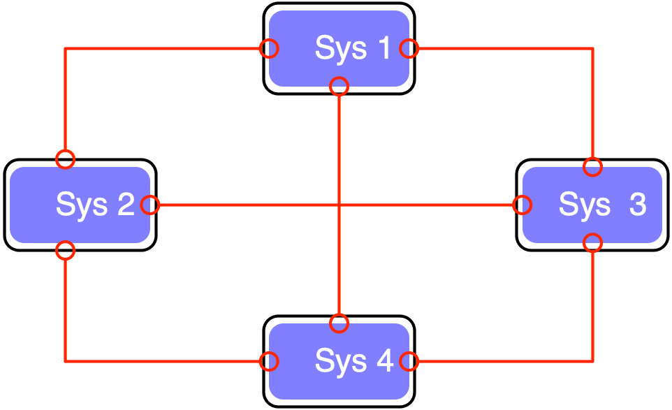
This type of topology is highly reliable and robust, but it can be expensive to set up and manage.
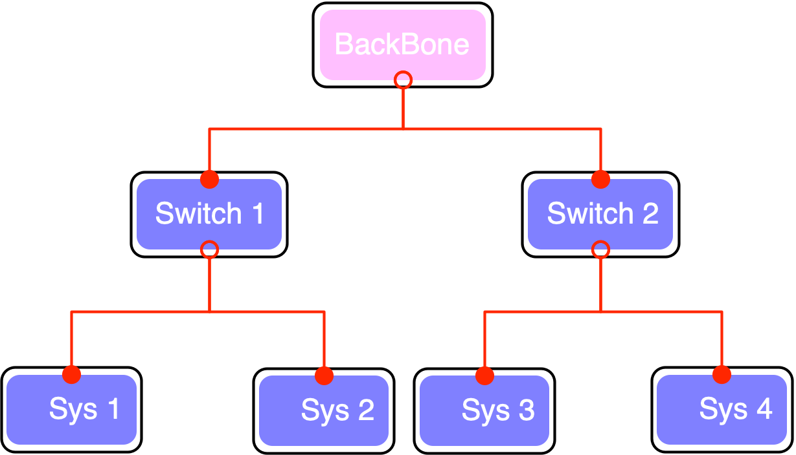
This type of topology is easy to set up and manage, but it can be affected by a single device failure.
Main Types are
LAN (local Area Network)MAN (Metropolitan Area Network)WAN (Wide Area Network) Other networks:
PAN (Personal Area Network), SAN (Storage Area
Network),EPN (Enterprise Private Network), VPN
(Virtual Private Network)a personal area network having an interconnection of personal
technology devices to communicate over a short distance. It covers only
less than 10 meters. Usually is a bluethoot network
Connects network devices in such a way that personal computers and workstations can share data, tools, and programs. The group of computers and devices are connected together by a switch, or stack of switches, using a private addressing scheme as defined by the TCP/IP protocol.
Covers a larger area than that covered by a LAN and a smaller area as compared to WAN. MAN has a range of 5-50km. It connects two or more computers that are apart but reside in the same or different cities. It covers a large geographical area and may serve as an ISP (Internet Service Provider).(FastWeb)
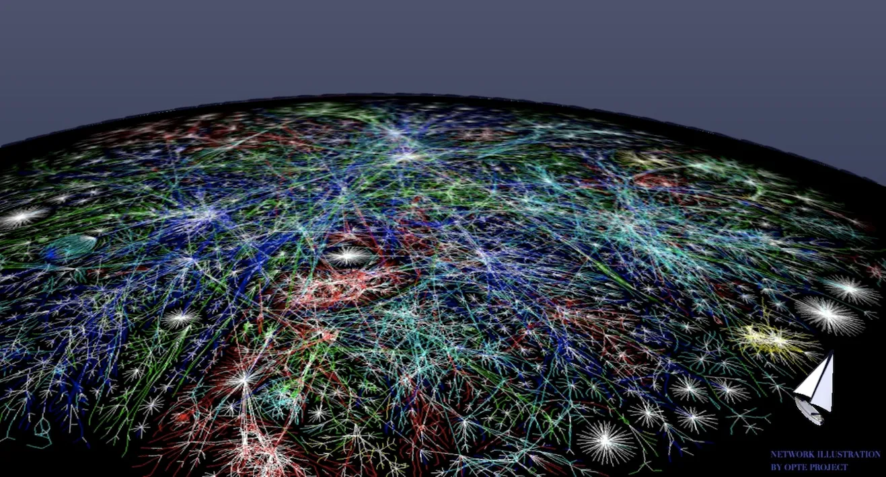
The world internet connection via fiber line, satellites links
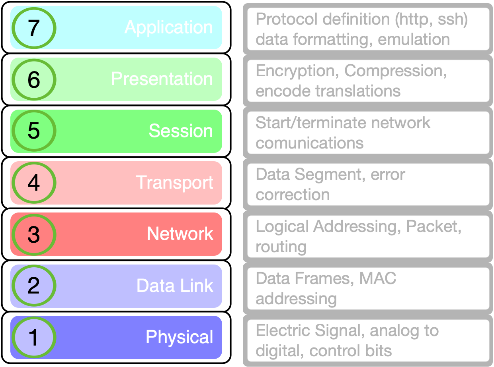
Open System Interconnection model
Physical Layer
Telephone network modems.IrDA physical layer.USB physical layer.EIA RS-232, EIA-422….Ethernet cables and plugs 10BASE-T, 10BASE …802.11 Wi-Fi physical layers.DSL.ISDN.Modems
Hubs Data Link Protocols
ARP Address Resolution ProtocolEthernetFDDI Fiber Distributed Data InterfaceIEEE 802.2 MAC layersIEEE 802.11 wireless LANI²CPPP Point-to-Point ProtocolSpanning Tree ProtocolToken ringSwitches
WAP (wireless access point) Network Layer Protocols
ICMP Internet Control Message ProtocolIPsec Internet Protocol SecurityIPv4/IPv6 Internet ProtocolIPX Internetwork Packet ExchangeRSMLT Routing Information ProtocolTransport Layer
ATP AppleTalk Transaction ProtocolIL Fibre Channel ProtocolTCP Transmission Control ProtocolUDP User Datagram ProtocolSession Layer Protocol
ADSP AppleTalk Data Stream ProtocolH.245 Call Control Protocol for Multimedia
CommunicationNetBIOS Network Basic Input Output SystemPAP Password Authentication ProtocolPPTP Point-to-Point Tunneling ProtocolRPC Remote Procedure Call ProtocolSMPP Short Message Peer-to-PeerSOCKS the SOCKS internet protocolPresentation Layer
Is the lower layer for an application layer can usually manage
Application Layer
Atom(rss) Publishing ProtocolHTTP HyperText Transfer ProtocolLDAP Lightweight Directory Access ProtocolNFS Network File SystemRPC Remote Procedure CallSMB Server Message BlockSMTP Simple Mail Transfer ProtocolSSH Secure ShellTor anonymity networkdesigned and developed by the Department of Defense (DoD) in the 1960s and is based on standard protocols. It stands for Transmission Control Protocol/Internet Protocol.
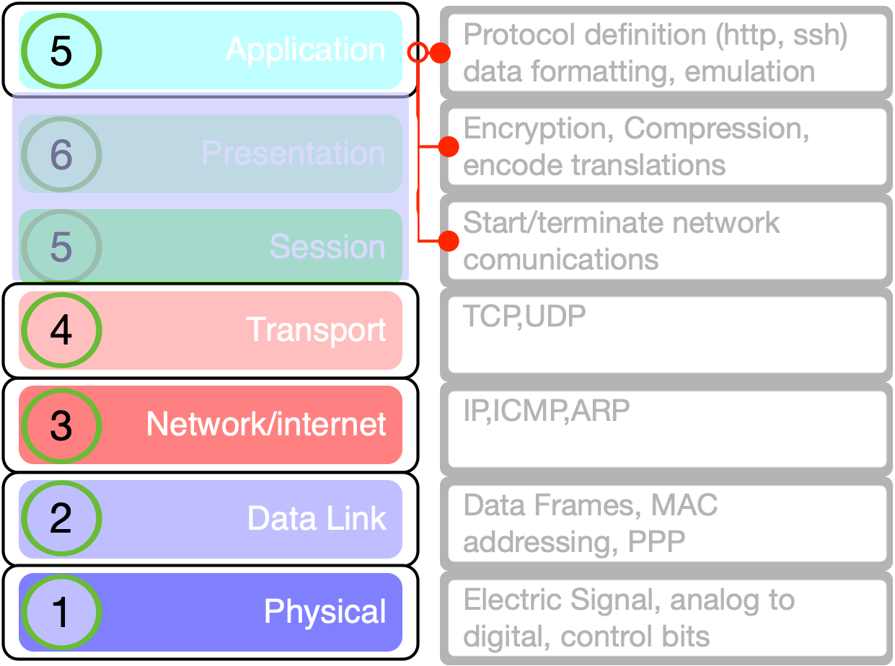
Internet Layer
IP Will deliver packets from the source to the
destination using the IP addresses in the packet headers. IP has 2
versions: IPv4 and IPv6.ICMP Internet Control Message Protocol. It is
encapsulated within IP datagrams.Provide information about network.ARP Address Resolution Protocol. Its job is to find the
hardware address of a host from a known IP address.Transport Layer
TCP Character-by-character transmission rather than
separate packets. A starting point that establishes the connection, the
whole transmission in byte order, and an ending point that closes the
connection.UDP Connections between receiving and sending hosts are
not verified by UDP. Applications that transport little amounts of data
use UDPApplication Layer
HTTP and HTTPSSSHFTP and sftpldap and ldaps| TCP/IP | OSI |
|---|---|
| TCP refers to Transmission Control Protocol. | OSI refers to Open Systems Interconnection. |
| TCP/IP has 5 layers. | OSI has 7 layers. |
| TCP/IP | OSI |
|---|---|
| TCP/IP is more reliable | OSI is less reliable |
| TCP/IP does not have very strict boundaries. | OSI has strict boundaries |
| TCP/IP | OSI |
|---|---|
| TCP/IP follows connection-less a horizontal approach. | OSI follows a vertical approach. |
| TCP/IP uses both session and presentation layer in the application layer itself. | OSI uses different session and presentation layers. |
| TCP/IP | OSI |
|---|---|
| TCP/IP developed protocols then model. | OSI developed model then protocol. |
| Transport layer in TCP/IP does not provide assurance delivery of packets. | In OSI model, transport layer provides assurance delivery of packets. |
| TCP/IP | OSI |
|---|---|
| TCP/IP model network layer only provides connection less services. | Connection less and connection-oriented both services are provided by the network layer in the OSI model. |
| Protocols cannot be replaced easily in TCP/IP model. | Protocols are better covered and is easy to replace with the change in technology. |
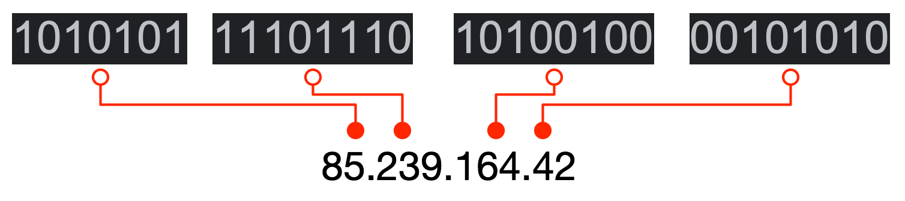
IP address is an address having information about how to reach a specific host, especially outside the LAN. An IP address is a 32 bit unique address having an address space of 2^32.
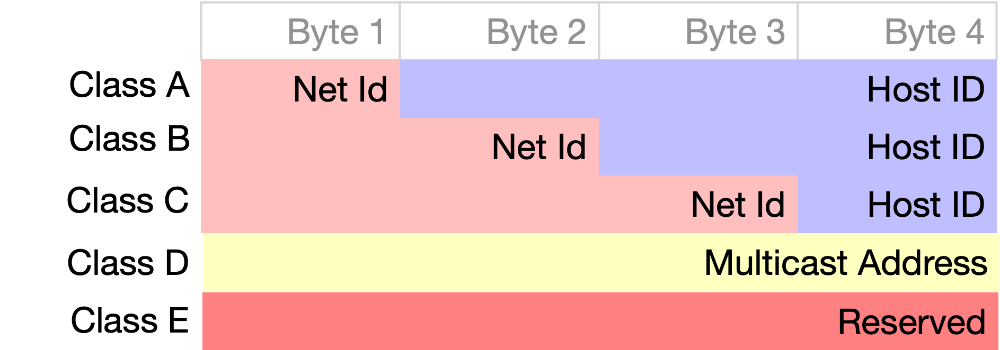
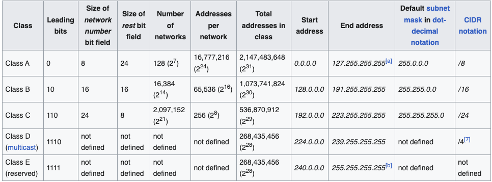
Classless Inter-Domain Routing (CIDR) is a method for allocating IP addresses and for IP routing. The Internet Engineering Task Force introduced CIDR in 1993 to replace the previous classful network addressing architecture on the Internet
CIDR notation is a compact representation of an IP address and its
associated network mask. The notation was invented by Phil Karn in the
1980 CIDR notation specifies an IP address, a slash
('/') character, and a decimal number.
The decimal number is the count of consecutive leading 1-bits (from left to right) in the network mask. The number can also be thought of as the width (in bits) of the network prefix.
For example:
198.51.100.14/24 represents the IPv4 address 198.51.100.14 and its
associated network prefix 198.51.100.0, or equivalently, its
subnet mask 255.255.255.0, which has
24 leading 1-bits.
A subnet mask is a bitmask that encodes the prefix
length associated with an IPv4 address or network in quad-dotted
notation: 32 bits, starting with a number of 1-bits equal to the prefix
length, ending with 0-bits, and encoded in four-part dotted-decimal
format: 255.255.255.0.
The Internet Assigned Numbers Authority (IANA) issues to regional Internet registries (RIRs) large, short-prefix CIDR blocks. However, a /8 (with over sixteen million addresses) is the largest block IANA will allocate
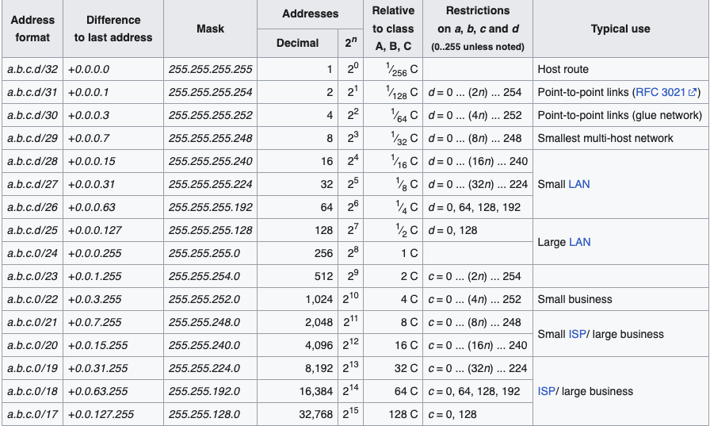
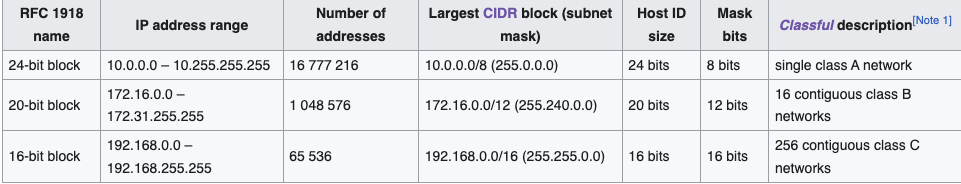

The ip header has an header checksum that will ensure that the packet header is correctly formed. This will avoid for example “spoofing” pratices(different IP adress of the sender)

The ending of the handshake will result in a properly crafted connection on a server designed port.
The Domain Name System (DNS) is the phonebook of the Internet. Humans access information online through domain names, like ifom.eu or unimi.it. Web browsers interact through Internet Protocol (IP) addresses. DNS translates domain names to IP addresses so browsers can load Internet resources.
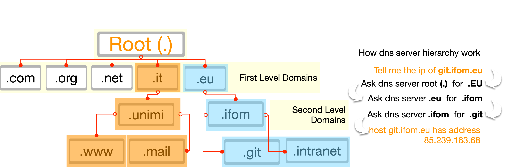